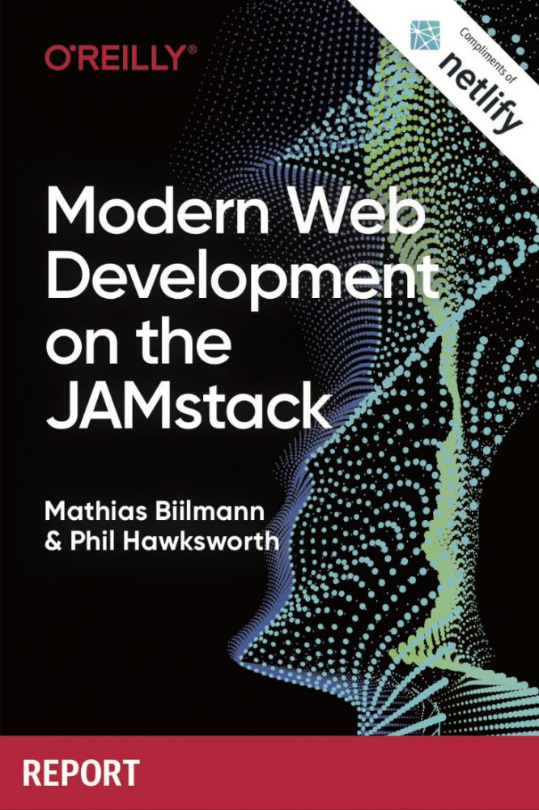
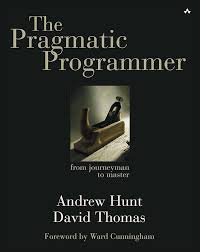

reglement de la bibliotheque
voici le réglement interne de la bibliotheque de l'ESEN :la consultation sur page
- periodique
- document audio-visuels
- ouvrages de references
- les projets
- les ouvrages en un seul exemplaire
| titre | image | Auteur(s) | date de partution | catégorie | lien sur le web | titre | image | Auteur(s) | date de partution | catégorie | lien sur le web |
|---|---|---|---|---|---|
| HTML5 et css3 |  |
Christophe aubry | 12/10/2016 | Programmation Web | HTML5 et css3 |
| HTML |  |
Collectif Eni | 28/10/2005 | Programmation Web | HTML |
| Reussir son référencement web 2015 Stratégies et technique SEO. |
 |
Olivier andrieu | 19/02/2015 | Référencement Web | SEO |
| Modern Web Development on the JAMstack |  | Mathias Biilmann, Phil Hawksworth | 13 octobre 2020 | Développement Web, Jamstack, Technologies Web Modernes | modern web |
| the pragmatic programmer |  | Andrew Hunt, David Thomas | 1999 (1ère édition), réédition 20e anniversaire en 2019 | Bonnes pratiques de développement, développement logiciel | programmer |